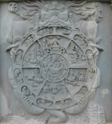
043 The Wheel of Life.jpg

Anandajoti
Own work
All 52 files directly listed in Wikimedia Commons: Bhavacakra, retrieved October 31, 2026, appear in the visualizer alongside the website’s original mandala. Category subfolders are not included.
Local files are Commons previews. Display adaptations include resizing, circular framing, rotation, softening, recoloring, and compositing. Each work and its individual adaptations retain the license linked below; this collection does not replace those licenses. Attribution does not imply endorsement.

Anandajoti
Own work
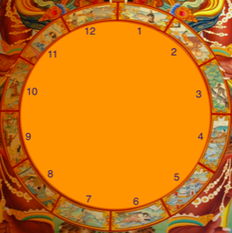
Ms Sarah Welch
Own work
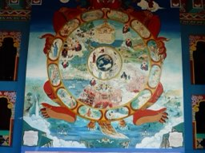
Moreau.henri
Own work
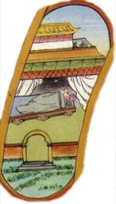
tibetisch-buddhistische Mönche
http://www.satinanda.de/thema-01/kosmologie.html
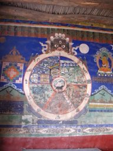
Redtigerxyz
Own work
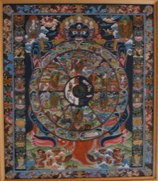
Mistvan
self-made copy of PD image
Whitehex
Own work
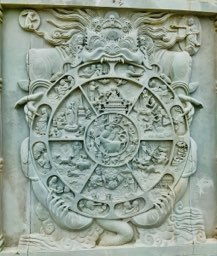
Ms Sarah Welch
Own work
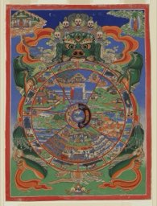
Unknown authorUnknown author
This image is available from the United States Library of Congress's Prints and Photographs division under the digital ID 2011432136.This tag does not indicate the copyright status of the attached work. A normal copyright tag is still required. See Commons:Licensing.
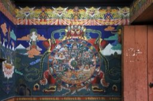
Gerd Eichmann
Own work
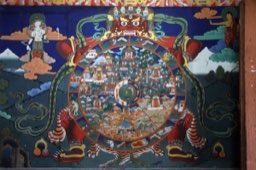
Gerd Eichmann
Own work
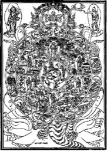
The original uploader was Schweigenderkaktus at German Wikipedia.
Transferred from de.wikipedia to Commons by Ireas using CommonsHelper.
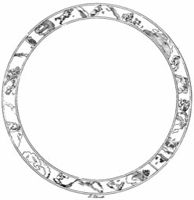
B. Schmidt
Annales du musée Guimet, tome 6 : Lalita Vistara, le Développement des jeux, trad. Philippe-Édouard Foucaux (1884). Source : https://fr.wikisource.org/wiki/Page:Annales_du_Musée_Guimet,_tome_6.djvu/335
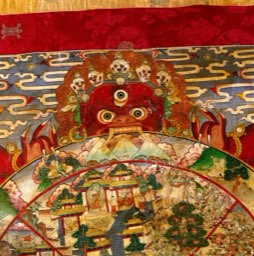
Unknown author
https://wellcomeimages.org/indexplus/obf_images/be/0d/d5c4f25c69a3e97e688dc4e26809.jpg Gallery: https://wellcomeimages.org/indexplus/image/V0017711.html Wellcome Collection gallery (2018-03-29): https://wellcomecollection.org/works/twmzyw7n CC-BY-4.0
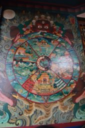
Suraj Belbase
Own work
ElioPrrl
Own work
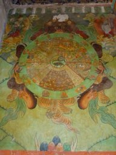
Immanuel Giel
Own work
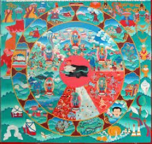
Lobzang namkha
Own work
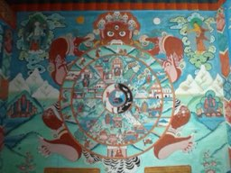
Yanajin33
Own work
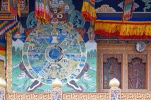
Bernard Gagnon
Own work
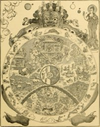
Internet Archive Book Images
https://www.flickr.com/photos/internetarchivebookimages/14597037558/ Source book page: https://archive.org/stream/ridpathshistoryo01ridp/ridpathshistoryo01ridp#page/n694/mode/1up
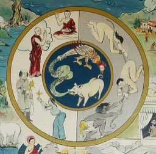
Unknown authorUnknown author
File:134_Temple_des_mille_Bouddhas_La_roue_du_Samsara.jpg
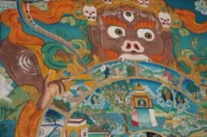
François Zeller from Montreal, Canada
Samsara - Ganden Monastery (Karnataka - India)
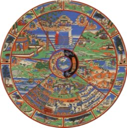
Unknown authorUnknown author
http://posneg.wordpress.com/2009/01/25/liberated-infostream-infodump-datawell-datamine/
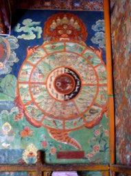
Hiroki Ogawa
https://web.archive.org/web/20161031180547/http://www.panoramio.com/photo/113520004
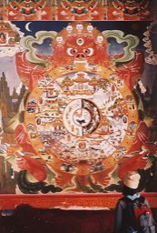
D momaya
Own work
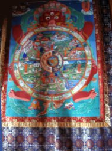
No machine-readable author provided. Deeptrivia assumed (based on copyright claims).
No machine-readable source provided. Own work assumed (based on copyright claims).
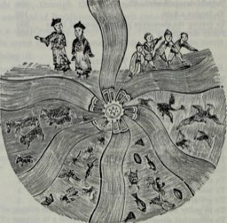
Internet Archive Book Images
https://www.flickr.com/photos/internetarchivebookimages/14597457917/ Source book page: https://archive.org/stream/dragonimagedemon1887dubo/dragonimagedemon1887dubo#page/n224/mode/1up
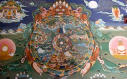
Nagarjun Kandukuru from Bangalore, India
The wheel of life
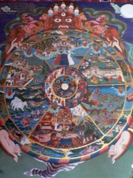
Stephen Shephard
Self-photographed
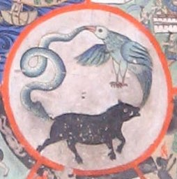
Redtigerxyz
https://en.wikipedia.org/wiki/File:Bhavacakra_Thikse.jpg
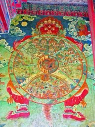
Dennis G. Jarvis
DSCN5692 - Wheel of Life
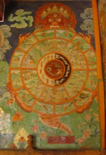
Philipp Roelli
Own work Taken photograph
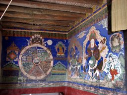
Lev Yakupov
originally posted to Flickr as IMG_1275
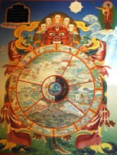
Wonderlane from Seattle, USA
Traditional wall mural of Yama holding the wheel of life, Buddha pointing the way out, Buddhism in America, Sakya Monastery of Tibetan Buddhism, Seattle, Washington, USA
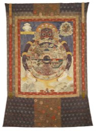
Eastern Tibetan origin
Sean Pathasema
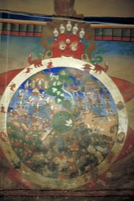
Unknown author
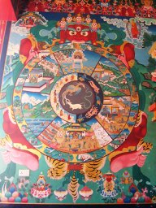
Zionorbi
Flickr
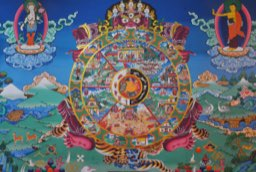
Prof Ranga Sai
Own work
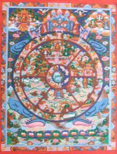
Original uploader (WT-fr) Surajshakya at French Wikivoyage
This file was imported from Wikivoyage fr.
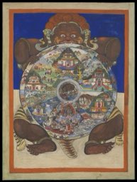
Unknown author
https://wellcomeimages.org/indexplus/obf_images/9a/6c/c6ee2cc104b41dc7ff1f2c2d4050.jpg Gallery: https://wellcomeimages.org/indexplus/image/L0069380.html Wellcome Collection gallery (2018-04-06): https://wellcomecollection.org/works/a8bpn2zj CC-BY-4.0
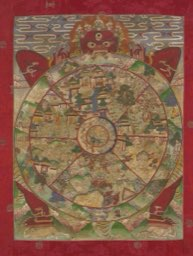
Unknown author
https://wellcomeimages.org/indexplus/obf_images/78/9e/150baaa20e65a192cc66da1f6481.jpg Gallery: https://wellcomeimages.org/indexplus/image/L0069368.html Wellcome Collection gallery (2018-04-06): https://wellcomecollection.org/works/uz7p34zr CC-BY-4.0
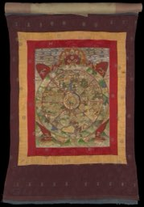
Unknown author
https://wellcomeimages.org/indexplus/obf_images/be/f5/fb26b8e4ecafc3d8cded0e221bae.jpg Gallery: https://wellcomeimages.org/indexplus/image/L0069369.html Wellcome Collection gallery (2018-04-06): https://wellcomecollection.org/works/ckxqpg6y CC-BY-4.0
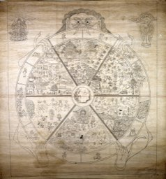
Unknown author
https://wellcomeimages.org/indexplus/obf_images/8b/b9/4ae5f0d9c02cc6c67b2a1c6a8ea5.jpg Gallery: https://wellcomeimages.org/indexplus/image/L0015314.html Wellcome Collection gallery (2018-04-06): https://wellcomecollection.org/works/bjpk2t95 CC-BY-4.0
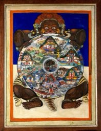
Unknown author
https://wellcomeimages.org/indexplus/obf_images/c3/65/e742dfff185c798f7c04899bbce8.jpg Gallery: https://wellcomeimages.org/indexplus/image/V0017705.html Wellcome Collection gallery (2018-04-06): https://wellcomecollection.org/works/pn93785g CC-BY-4.0
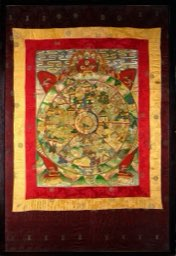
Unknown author
https://wellcomeimages.org/indexplus/obf_images/18/99/7faaa26f1bf3fee847b9c762b0c7.jpg Gallery: https://wellcomeimages.org/indexplus/image/V0017709.html Wellcome Collection gallery (2018-04-06): https://wellcomecollection.org/works/prukyx7k CC-BY-4.0
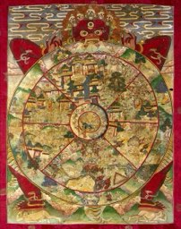
Unknown author
https://wellcomeimages.org/indexplus/obf_images/df/0d/c8d7d9bfba970e68f96724a1764f.jpg Gallery: https://wellcomeimages.org/indexplus/image/V0017709F2.html Wellcome Collection gallery (2018-04-06): https://wellcomecollection.org/works/d5zuezsp CC-BY-4.0
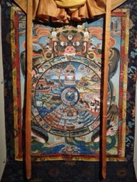
丘崈
Own work
The original central mandala comes from the existing photograph supplied with this website.


_(14597037558).jpg){kind=link}

_(33306602720).jpg){kind=link}

.jpg){kind=link}


_(14597457917).jpg){kind=link}


.jpg){kind=link}